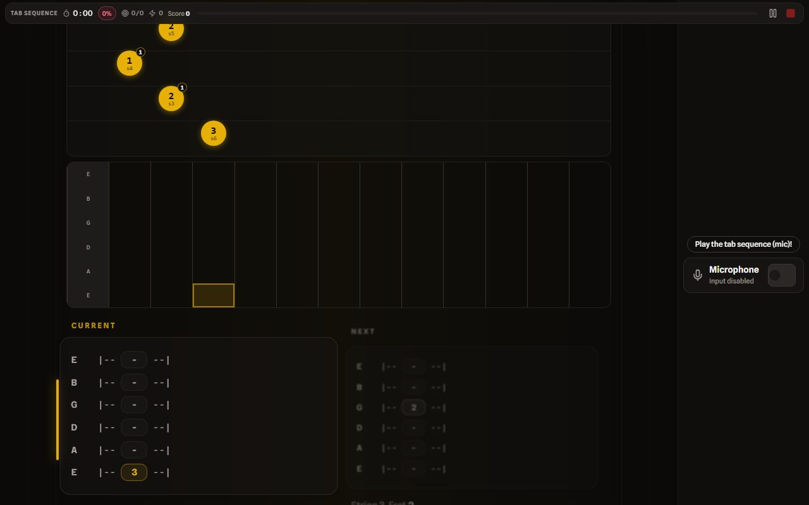

FretMemo is a free fretboard note trainer in the browser with five drills. In three of them you see a fret, a tab position or a note name and answer on screen. In the other two, "Note Generator" and "Tab Sequence", you play the prompt on your guitar and the microphone checks the note. There is no account, and the mic is only used by those two drills.
This is the oldest part of FretMemo, the fretboard memorization game the site started as, and the part I've rebuilt most this year: a count-in, a falling tab highway, finger numbers, spaced repetition and a latency calibration for the mic.

Why a guitar note trainer has to work in both directions
Naming the note at the 7th fret of the G string and finding a D on the G string look like the same skill, but you build them separately, and neither one gets the note out of the guitar in time. So the drills go both ways, and two of them make you play. The Train page groups them as "Guess Note" and "Play Practice".
The five fretboard drills
- Fretboard → Note. A position lights up and you pick its name.
- Tab → Note. You read a tab position and name the note it sounds.
- Note → Tab. You get a note name and pick a matching tab position.
- Note Generator. The app shows note names, you play them, and the mic detects what you played. "Note Sequence" sets the order: "Random", "Minor Thirds", "Major Thirds", "Fourths", "Fifths", "Sevenths", "Major Scale", "Natural Minor Scale", "Major Pentatonic" or "Minor Pentatonic".
- Tab Sequence. Tab positions fall down a highway toward a fretboard grid, with a "CURRENT" and a "NEXT" tab box below and three upcoming positions queued above. The fall speed follows the metronome, and with the metronome off the highway stands still.
On the highway each dot carries a finger number from 1 to 4. The app keeps your hand in a four-fret window, gives each note inside it a finger, moves the window as little as possible for a note outside it, and gives open strings no finger. A "practice position" band shows where the window is. The same logic helps it choose playable positions for consecutive notes.
Session Setup, count-in and speed-up
Every drill opens with "Session Setup". "Tempo" goes from 30 to 280 BPM, and "Metronome" adds a click. "Count-in" plays 4 clicks with a 4-3-2-1 overlay before the session starts; it is off by default and remembers your choice. With the metronome on, "Auto Speed-Up" raises the tempo by "Increase" BPM every "Every X beats" beats, +5 every 8 by default.
The focus settings decide which notes you get: "Fret Range", "Strings", "Notes" ("All Notes" or "Naturals"), and a "Root Note" and "Scale Type" if you want to stay inside a scale. The play drills add "Microphone Input" with an "Input Device" picker, and "Session Mode": "Scored Session" ("Auto-finishes after target count and shows summary.") or "Guitar Mode" ("Endless practice. No scoring or time limits.").
How the microphone check works
Pitch detection runs in the browser, on autocorrelation. It matches by note name only, so the octave and the string are not checked. If Tab Sequence asks for fret 5 on the low E and you play the A on the open A string, it counts. That makes it forgiving for beginners and useless as a check of exact positions. With the metronome on, a target you haven't played when the next click cycle starts counts as a miss, and "Too slow!" appears.
For the latency calibration, go to Me → Settings → Audio, "Input latency (microphone)", and press "Calibrate". You play or clap on 12 clicks at 90 BPM, it needs at least 4 clean hits, and the result is the median offset, between 0 and 250 ms. "Apply" sets the latency value in Rhythm Dojo, and the mic loops in the learning paths use it as well.
Note names, tunings, the heat map and spaced repetition
Under Settings → "Instrument", "Note Naming" picks "Sharps (#)", "Flats (b)" or "Random (#/b)", "Randomization Scope" decides whether random naming changes "Per Session" or "Per Question", and "Accidental Complexity" set to "Advanced (##/bb)" can include double sharps and flats. "Tuning Preset" has 14 presets, and the choice applies to every fretboard exercise.
"Spaced Repetition" (Settings → "Practice", on by default) uses SM-2 to bring back the positions you miss and the ones you haven't seen for a while. To see where they are, switch on "Heat Map Overlay" during practice, or open the accuracy fretboard on the Progress page.
How to run a Tab Sequence session with the mic
- Open fretmemo.net/train and scroll to "Fretboard Drills".
- Pick "Tab Sequence". The "Session Setup" dialog opens.
- Switch on "Metronome" and set "Tempo" to 60 BPM. Switch on "Count-in" if you want four clicks before the first note.
- Switch on "Microphone Input" and choose your interface or mic under "Input Device".
- Choose "Scored Session" for a summary at the end, or "Guitar Mode" to play without one.
- Press "Start", allow the microphone, and play each position as it reaches the fretboard, with the finger shown on the dot.
A 15-minute routine: five minutes of "Fretboard → Note" on two strings with "Naturals", five of "Note → Tab" on the same strings, then five of "Note Generator" with "Note Sequence" on "Fifths" in "Guitar Mode". Widen the strings when the heat map stops showing red there. To link the notes to their sound, try ear training for guitar, and for timing, the guitar rhythm trainer.
Limits
- The mic matches note names, not octave or string, so it can't confirm you played the exact position on the tab.
- Without a mic, the play drills mark every target as a miss once the metronome moves on. Use the three quiz drills instead.
- There are no per-drill URLs. Every drill opens fretmemo.net/practice from the Train page.
- The count-in is always four clicks.
- The highway shows frets 0 to 12 on six strings.
- "Custom (Current)" in the tuning list is not an editor; you can't set each string yourself.
FAQ
Is there a fretboard note trainer that listens to my guitar?
Yes. FretMemo's Note Generator and Tab Sequence drills use your microphone to detect the note you play, free in the browser. It matches the note name only, so the octave and the string are not checked.
How do I memorize the notes on the guitar fretboard?
Work on a small area at a time and quiz yourself in both directions, from a position to its name and from a name to a position, then play the notes on the guitar. In FretMemo you limit Fret Range and Strings in Session Setup, start with Naturals, and spaced repetition brings back the positions you miss.
Does the guitar note trainer work in Drop D or on a 7-string?
Yes. FretMemo has 14 tuning presets, including Drop D, DADGAD, Open G, Standard 7, Drop A 7 and Standard 8, plus bass and ukulele, and the tuning applies to all fretboard-based exercises. There is no editor for a custom tuning per string.
How do I calibrate microphone latency in FretMemo?
Open Me, then Settings, then Audio, and press Calibrate under Input latency (microphone). Play or clap on 12 clicks at 90 BPM; the app takes the median offset, between 0 and 250 ms, and Apply sets it as the Rhythm Dojo latency value, which the improvisation mic loops also use.
Open the fretboard drills
Pick a drill, set the frets and strings you want, and play with or without the mic.
Open the drills Free, no account, runs in the browser.